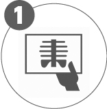
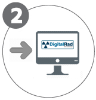
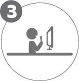
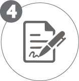

Ressonância Magnética e a Nuvem
O papel estratégico da nuvem em exames de RM. A distribuição, armazenamento fulltime de exames e os desafios das equipes de T.I de clínicas e hospitais.
Possuímos os mais avançados serviços de laudos a distância, com resultados diferenciados em diagnósticos de ressonância magnética, tomografia computadorizada e demais exames por imagem.

SEU SERVIÇO EXECUTA O EXAME

O EXAME É ENVIADO DIGITALMENTE PARA A DIGITALRAD

ELABORAÇÃO DOS LAUDOS PELA EQUIPE ESPECIALISTA

O LAUDO É REVISADO E ASSINADO DIGITALMENTE PELO PROFISSIONAL
O LAUDO É ENVIADO DIGITALMENTE PARA SUA CLÍNICA
Telerradiologia é a transmissão eletrônica de imagens radiográficas de um ponto a outro, visando à interpretação diagnóstica para tornar a saúde mais acessível à população.
A DigitalRad Telerradiologia oferece laudos à distância 24h por dia nas áreas de Radiologia, Diagnóstico por Imagem e Medicina Nuclear.
Em menos de 1 hora seu serviço de radiologia pode começar a receber nossos laudos.